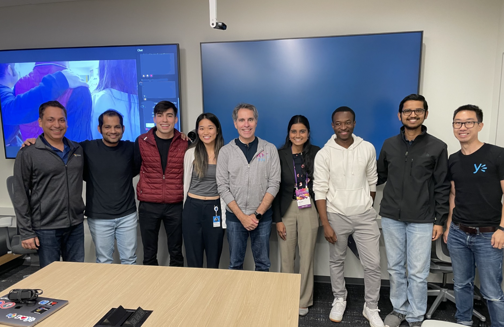
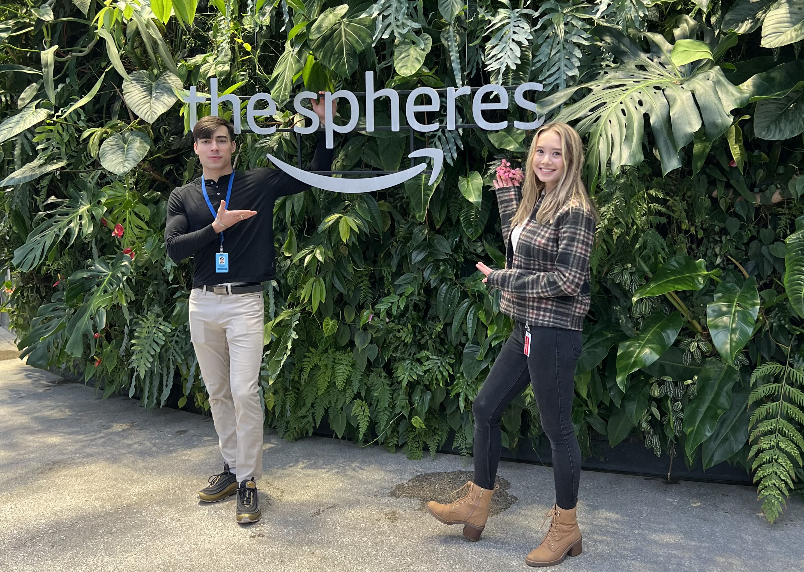
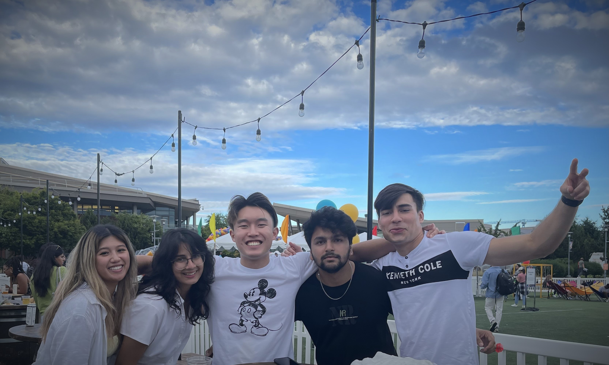
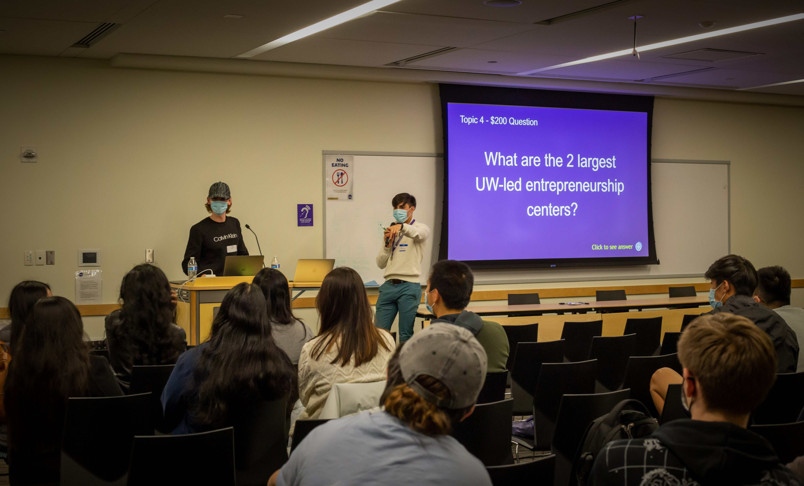
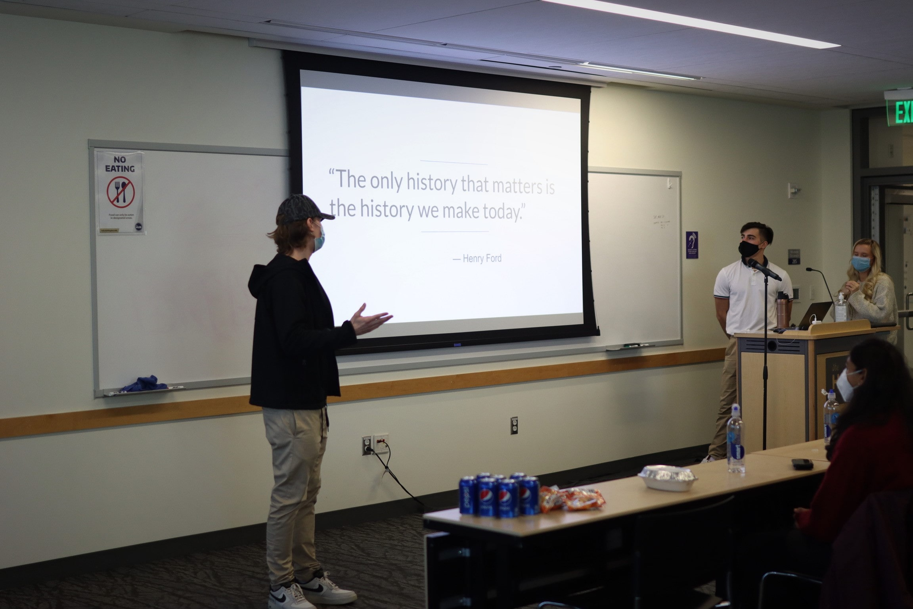
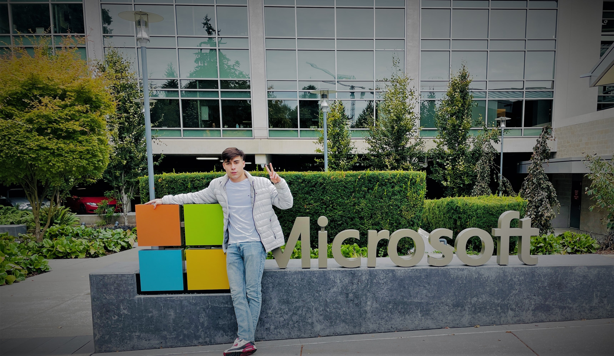

Experience, Growth
Here live my current and selected past work experiences.
"The only source of knowledge is experience."
-Albert Einstein
2026 - Current - Senior SWE, Salesforce
I work on AI infrastructure and agentic systems: the platform layer that helps teams train, operate, and scale increasingly capable AI workloads. My work spans distributed compute and cloud AI ecosystems, including Ray, Amazon SageMaker and HyperPod, Google Cloud, and Vertex AI.
- AI infrastructure and platforms for production ML workloads.
- Distributed compute across Ray, AWS, and GCP ecosystems.
- Infrastructure patterns for modern agentic systems.
2023 - 2026 - Software Engineer II, Microsoft
Over roughly three years at Microsoft, I worked in Viva Engage on Teams Q&A and live-event experiences used at significant scale. The role combined product execution with cross-team platform work across Microsoft 365, Teams, compliance, government cloud, and applied AI.

- Helped scale Teams Q&A monthly active usage by 4× through a series of core product features.
- Supported the transition of Viva Engage events from Microsoft Stream to Teams Live Events.
- Integrated Teams Town Hall into Viva Engage.
- Obtained CJIS clearance and helped enable Teams Q&A for the Government Community Cloud.
- Contributed to Teams Copilot and AI-assisted Q&A experiences.
2022 - Amazon SDE Internship
On Alexa AI, I improved the systems behind Natural Language Understanding workflows. I designed a solution that reduced training-set generation time by 80%, then built a caching layer that cut regression triage for data scientists from roughly a day to minutes.

2022 - Microsoft SWE Internship
I returned to Microsoft as a software engineering intern on Yammer’s Compliance and Search team.

I delivered a group data-export feature centered on GDPR compliance and pipeline reliability. The project required close coordination across engineering and product teams and shipped ahead of schedule.
2022 - StartupUW
I joined StartupUW to help turn the university’s entrepreneurial talent into a stronger founder community. On an eight-person leadership team, I helped restructure the organization and initially led Startup-a-thon.

Startup-a-thon became an early-stage venture competition with more than 100 participants, bringing together founders, investors, speakers, and hands-on workshops.

I later became Executive VP and then Co-President. We doubled the team and grew StartupUW into a more connected, durable community for student founders across campus.
2021 - iD Tech
I taught game development to young computer scientists and was selected among the first instructors to launch iD Tech’s VR development curriculum. Teaching made me much better at decomposing technical ideas and adapting them to the person in front of me.
To teach is to learn twice over.
-Joseph Joubert
2020 - Microsoft Explore
Microsoft Explore was my first industry engineering role and my introduction to building software on a cross-functional team.

Our team built a Unity and WebGL game that turned hundreds of security-training concepts into an engaging experience with levels, narrative, and leaderboards. It taught me to balance technical constraints with the clarity and momentum a user-facing product needs.
Shhh...🤫 Wanna see something cool?
If you want to see what I have been working on, follow me to the Project Studio, the ever-growing sanctuary of my precious artifacts.